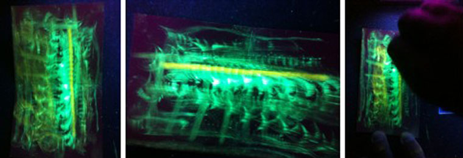

|  |
| Chromogenic materials > Scratch the Surface Ink > Poetic Reflections |
|
Fugal and epiphanic at once, the protean, palimpsestic images captured by these crushed, smeared crystals enthrall their “reader” with a sense of the ineffable made, for a moment, dazzlingly noetic. Matter derives from the Latin mater (woody part of a tree, material, substance) and is cognate with mater (mother; fermentation), so it is little wonder, perhaps, that the lustrous, kinetic, mysterious scapes produced by these fluorescent molecules are both utterly somatic and profoundly ephemeral. Viewed one way, for instance, a lambent panel suggests a torso of fluxed light emitting a chakric strand of white umbilical portals, a ribcage rustling with vernal, backlit trees. Flipped on its side, the same slide reveals a fleet Lascaux cave herd streaming in a frisson of galactic blue under a file of white birds and a seam of gold. Another image shows an inscrutable Egyptian cat – or is it a woman leaning into the gilt threshold of the eons? Strikingly interior and zodiacal at once, as though affording a glimpse into time and memory, this inimitable substance, in its manifold manifestations, resembles nothing perhaps so much as it does itself, and it is the human in interaction with it who discovers anew what Welsh poet Dylan Thomas noted when he wrote that “the force that through the green fuse drives the flower / drives my age.” We are invited to experience the infinite yet intimate light that holds us, and the light, which we hold within. -Lisa Russ Spaar
*Images above, left to right: torso, Lascaux cave herd, Egyptian cat or woman.
|
|